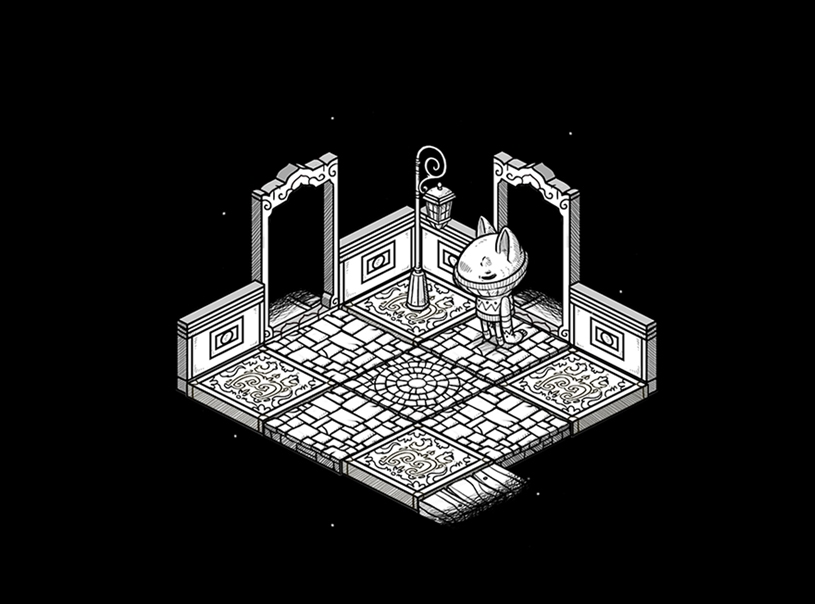
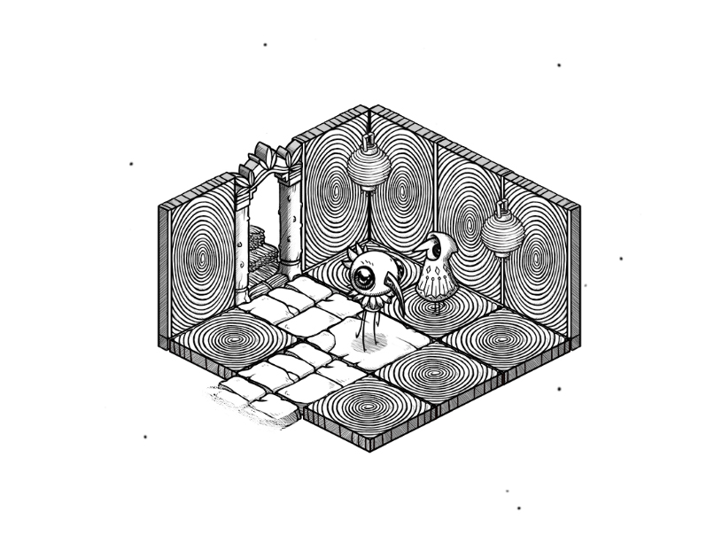

oquonie
what is oquonie?
Oquonie is a textless isometric puzzle game.
You must make your way through a seemingly endless succession of rooms. You will not be alone. Your incarnations will have the help of bizaroid characters that speak an obscure language.
trailer
download
inspiration
We made Oquonie while living in Japan. The game was our first collaborative project, and a reflection of our experience navigating a new country, with language as a recurent obstacle. Oquonie is about being lost in a foreign space.
A big inspiration for this project was the short story 'A town without streets' by Junji Ito, about a city of endless interconnecting houses and rooms, where privacy is non-existent. To preserve the little privacy they do have, the townspeople wear masks.
production
Back in 2013, we both had full-time jobs in different studios in Tokyo, we worked on Oquonie after work, and on weekends, for a total of 6 months. It was Devine's second time programming a full game, after Hiversaires, and first time working with animated sprites. It was Rekka's first ever self-published game.
Oquonie was released on February 14th 2014, on the iTunes Store. We spent many more hours on the game after the release, adding extra content and porting it to other platforms, all thanks to our collaborator and friend Rez Mason. The game was nominated for an IGF award in 2015, for visual excellence.
In 2018, we removed the game from the iOS store, in a conscious attempt to distance ourselves from Apple ecosystem. After looking at the trajectory of the development tools, namely the bloated development environment, we did not believe that it was possible for us to continue working on our games, while at sea with little connectivity for the Apple mobile platform.
We also could not reconcilliate pushing for environmentally conscious action, while supporting a company that fights against the Right to Repair, and create wasteful products. Instead, the game was published exclusively on the Itch.io store, a publishing platform in line with our values.
The game now runs on major desktop platforms.
screenshots
